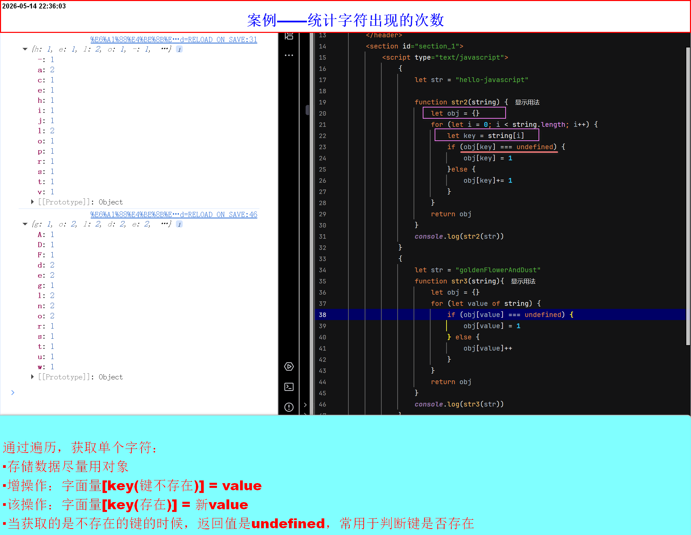

案例——统计字符出现次数

补充知识
- 存储数据尽量使用对象
- 回顾增操作：
字面量[键] = value其中键不存在 - 回顾改操作：
字面量[键] = 新value其中键存在 - 回顾查操作：
字面量[键]其中键存在，则返回正常值,若不存在，返回值undefined - 回顾删操作：
delete 字面量[键]其中键存在 - 查不存在的键，返回值是
undefined,主要常用于判断键是否存在

字面量[键] = value其中键不存在字面量[键] = 新value其中键存在字面量[键]其中键存在，则返回正常值,若不存在，返回值undefineddelete 字面量[键]其中键存在undefined,主要常用于判断键是否存在